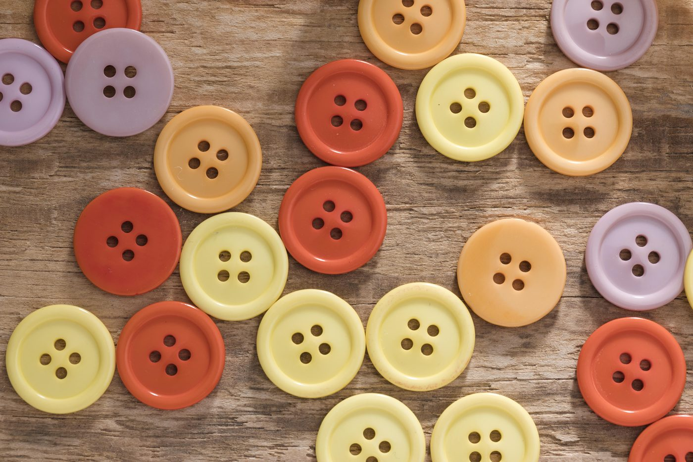
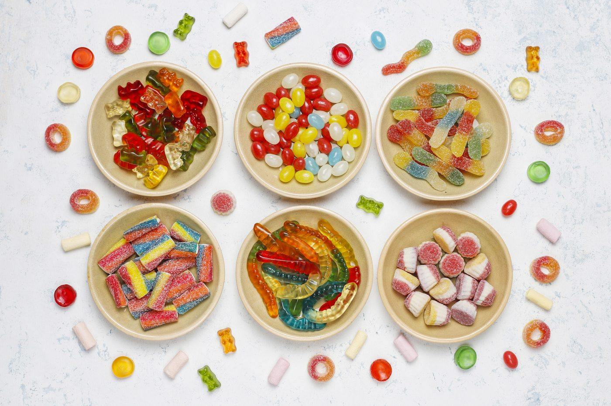

Ever wanted to play poker, but didn’t have chips or didn’t want the game tied to gambling or real money?
Maybe you’re just a beginner to poker, or you’re hosting a casual game night where keeping things light and fun is the goal. Whatever the reason, the great news is: you don’t need chips or cash to enjoy the thrill of poker. In this guide, we’ll explore how to play poker without gambling or betting with money, with creative alternatives that keep the competition real and the fun intact.
How to Play Poker Without Chips: 5 Best Poker Chips Alternatives
Everyday Items

You don’t need fancy poker chips to kick off a game. Just take a quick look around your home or office. That kitchen junk drawer? A treasure chest. Buttons can stand in as colorful low-value chips, bottle caps work perfectly for mid-range bets, and matchsticks can be bundled for bigger amounts.
At the office, it’s just as easy: paper clips, push pins, binder clips, and sticky notes can all pull double duty as betting tokens. These items are usually clean, uniform, and easy to sort, making them surprisingly effective for tracking the action.
The secret to making it work is organization. Before dealing the first hand, decide on a clear value system: maybe small buttons are worth 1, bottle caps are worth 10, and a bundle of matchsticks is worth 100. Keep each type of token grouped together and, if possible, separated by color, size, or shape. This way, everyone knows exactly what each “chip” is worth.
Play It on the App or Online
When you're short on space or supplies, just play online. Tons of free poker apps let you host private games with friends, using virtual chips that cost nothing. This option removes the need for physical tracking and allows automatic dealing, shuffling, and betting. That’s where Pokerrrr 2 comes in.
With Pokerrrr 2, you can host private games, create your own Poker Club, and enjoy smooth, real-time action in Short Deck Poker, Texas Hold’em, Omaha, Blackjack, and more. Whether you’re learning the ropes or diving into easy poker games with friends, Pokerrrr 2 makes it effortless. Track hand histories, chat live at the table, and enjoy a virtual game night that captures the excitement of poker.
Game and DIY Props
When you want something a bit more polished without buying actual chips, your printer and some cardstock can save the day. Tons of free poker chip templates are available online—just print them in different colors for various values, cut them out, and you’re ready to play. You can even personalize them with your name, a group logo, or fun emojis for a custom touch.
If printing isn’t your style, raid your board games instead. Monopoly money works perfectly for bets, with the existing denominations easily mapping to blinds and all-ins, while tokens from games like Risk or Settlers of Catan can be assigned values by type or color.
Food

Poker night and snacks go hand in hand, so why not make the snacks part of the game? Use candy like Skittles, M&Ms, or sour patches, as stand-ins for chips. The key is always assigning values based on color or size, for example, a red Skittle might be 1 point, while a mini Snickers bar is 100. This approach is perfect for casual games, family gatherings, or kid-friendly versions of poker.
Write Down the Results
For a minimal, no-mess option, just ditch physical tokens altogether and write down everyone’s stack. Each player starts with a set value (like 1,000 or 10,000 points), and bets are tracked using pen and paper, a whiteboard, or a notes app. This is one of the cleanest, easiest ways to play without any physical chips. Plus, it makes teaching probability in poker simple, as you can calculate pot odds and hand values directly.
How to Pick the Best Substitute for Poker Chips
If you’re out of board game pieces, office supplies, or household odds and ends, you can still keep the game going with whatever’s nearby. Just make sure your stand-ins have the right qualities. Good substitutes are uniform in size and shape to avoid confusion, small enough not to clutter the table, and non-staining so they won’t damage cards. They should also stack easily and stay put without rolling around.
Visual clarity is just as important. Pick items in different colors or shapes so each value is obvious at a glance. This keeps betting smooth and minimizes arguments over what’s worth what. Whether you grab coins, bottle caps, or even folded paper, the right choice will make your improvised setup feel organized and ready for serious play.
Enjoy the Fun of Poker without Chips Only at Pokerrrr 2
Now you know how to play poker at home without chips, from grabbing Monopoly money and paperclips to turning candy into colorful tools. Whether you're improvising with household items or tracking scores on paper, it's easy to keep the good times rolling without using real money or physical chips. These creative, chip-free methods are perfect for casual game nights or learning the best starting hands in poker with friends. Of course, if you're playing online or using a mobile app, such as Pokerrrr 2, you can skip the hassle altogether and still have all the fun of poker games. Download Pokerrrr 2 now and turn every moment into a competitive and thrilling poker session with your buddies.